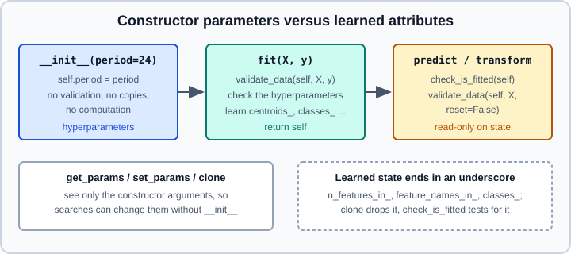

Building Custom Estimators & Transformers
|
This content was generated with the assistance of AI and should be verified against the official documentation before being relied on in production. |
Sooner or later a project needs a step that scikit-learn does not ship: a domain-specific feature, a model with an unusual rule, a wrapper that adds behaviour to another estimator. Written as a plain function it works until someone puts it in a Pipeline, clones it in a grid search, or saves it; written as an estimator that follows the conventions, it plugs into all of them. This page explains the conventions, shows three complete estimators (a transformer, a classifier, a meta-estimator), the tests that check them, and the mistakes that the tests catch.
Examples were run on Python 3.13 with scikit-learn 1.9.1, NumPy 2.5.4, pandas 3.1.0 and pytest 9.2.0 on 2026-10-31. Every API used (validate_data, __sklearn_tags__, check_estimator) exists since scikit-learn 1.6.
The short version of the rules is in the estimator-API page, section "Writing your own estimator": The scikit-learn Estimator API. This page assumes it and goes further: sample weights, meta-estimators, tags, the checks and what breaks them. Related pages: get_params, set_params and clone, Pipelines, set_output, Metadata Routing and Glossary.
The contract

Everything scikit-learn does with an estimator depends on three facts:
-
get_paramsreflects the constructor.BaseEstimator.get_paramsreads the signature of__init__and returns the attribute of the same name for each argument. So every argument must be stored, unchanged, under its own name, and__init__takes no*argsor**kwargs.set_paramswrites the same attributes, which is why a grid search can change a parameter without calling__init__again. -
clonebuilds a new object fromget_params. It constructs an unfitted copy with the same parameters. State learned byfitis not copied, and a constructor that converts, validates or computes would give a clone different from its source. For that reason validation (periodmust be positive) belongs infit. -
Fitted state ends in an underscore.
check_is_fittedtests whether any attribute ending in_exists. Public learned attributes (coef_,classes_) are documented; private ones start with an underscore.
The method contract:
-
fit(X, y=None, **fit_params)validates the input, learns, and returnsself. Callingfittwice must be the same as calling it once on the second data (no leftover state), unless the estimator has a documentedwarm_start. Unsupervised estimators and transformers still accepty=Noneso that pipelines can pass it. -
predict,transform,predict_probaanddecision_functionstart withcheck_is_fitted(self), validate withreset=False, and never change the fitted state. -
A transformer does not change the number of rows. A step that removes rows (for instance outlier removal) is not a transformer; imbalanced-learn calls such objects samplers and gives them their own pipeline (see Imbalanced Data).
-
Classifiers set
classes_(sorted unique labels, any hashable type) infit, and the columns ofpredict_probaanddecision_functionfollow its order. A binarydecision_functionreturns a one-dimensional array: the score of the positive class (classes_[1]). -
Random behaviour takes a
random_stateconstructor argument, stored unchanged;fitcallssklearn.utils.check_random_state(self.random_state)and does not touch the global NumPy generator. See Common Pitfalls for what an integer versus an instance means.
validate_data(self, X, y, ...) (module sklearn.utils.validation) does the repetitive part: it converts the input to a NumPy array, rejects NaN and infinity unless the tags allow them, checks that X is two-dimensional, sets n_features_in_ and, for a DataFrame, feature_names_in_; with reset=False it instead checks that the new data have the same number of features and the same column names. The parameter reset=True (the default) belongs in fit, reset=False everywhere else.
Mixins add behaviour and go on the left of BaseEstimator: TransformerMixin (fit_transform, plus set_output when get_feature_names_out exists), ClassifierMixin (score = accuracy), RegressorMixin (score = R²), ClusterMixin, OutlierMixin, MetaEstimatorMixin. The order matters because the mixins override BaseEstimator’s defaults (for instance the tags).
A transformer: cyclical encoding
A stateless-looking transformer that still follows every rule: it maps a periodic feature (hour of day, day of year) to a sine and a cosine, so that the end of the cycle is next to its start. The period is a hyperparameter. It validates it in fit, reports feature names, and supports pandas output through set_output.
import numpy as np
import pandas as pd
from sklearn.base import BaseEstimator, TransformerMixin
from sklearn.utils.estimator_checks import check_estimator
from sklearn.utils.validation import check_is_fitted, validate_data
class CyclicalEncoder(TransformerMixin, BaseEstimator):
"""Encode each column of a periodic feature as a sine and cosine pair."""
def __init__(self, period=24):
self.period = period
def fit(self, X, y=None):
validate_data(self, X) # sets n_features_in_ and feature_names_in_
if self.period <= 0:
raise ValueError(f"period must be positive, got {self.period!r}")
return self
def transform(self, X):
check_is_fitted(self)
X = validate_data(self, X, reset=False)
angle = 2 * np.pi * X / self.period
return np.hstack([np.sin(angle), np.cos(angle)])
def get_feature_names_out(self, input_features=None):
if input_features is None:
input_features = getattr(self, "feature_names_in_",
[f"x{i}" for i in range(self.n_features_in_)])
names = np.asarray(input_features, dtype=object)
return np.concatenate([[f"{n}_sin" for n in names], [f"{n}_cos" for n in names]]).astype(object)
df = pd.DataFrame({"hour": [0, 6, 12, 18], "load": [1.0, 2.0, 3.0, 4.0]})
enc = CyclicalEncoder(period=24).set_output(transform="pandas")
print(enc.fit_transform(df[["hour"]]).round(2))
check_estimator(CyclicalEncoder())
print("CyclicalEncoder checks passed")hour_sin hour_cos 0 0.0 1.0 1 1.0 0.0 2 0.0 -1.0 3 -1.0 -0.0 CyclicalEncoder checks passed
Notes on this listing:
-
fit_transformandset_outputcome fromTransformerMixin; the second exists because the class definesget_feature_names_out. Without it,set_output(transform="pandas")would not be available. -
-0.0in the last row is the IEEE negative zero from \(\cos(3\pi/2)\) rounding; it is harmless. -
check_estimatorreturns without error when all checks pass. -
The same class works inside a
ColumnTransformer(("cyc", CyclicalEncoder(24), ["hour"])) and its names flow into the output ofget_feature_names_outof the whole pipeline. Compare it with the periodicSplineTransformerused in End-to-End ML Project: the spline is the more flexible choice for linear models, the sine-cosine pair is the minimal one.
A classifier with sample weights
A nearest-centroid classifier that supports sample_weight and predict_proba. The weights make each centroid a weighted mean, which is how many scikit-learn estimators interpret them (duplicating a sample is equivalent to doubling its weight).
import numpy as np
from sklearn.base import BaseEstimator, ClassifierMixin
from sklearn.utils.estimator_checks import check_estimator
from sklearn.utils.multiclass import check_classification_targets
from sklearn.utils.validation import _check_sample_weight, check_is_fitted, validate_data
class WeightedCentroidClassifier(ClassifierMixin, BaseEstimator):
"""Assigns the class with the nearest weighted centroid."""
def __init__(self, temperature=1.0):
self.temperature = temperature
def fit(self, X, y, sample_weight=None):
X, y = validate_data(self, X, y)
check_classification_targets(y)
sample_weight = _check_sample_weight(sample_weight, X)
self.classes_, y_idx = np.unique(y, return_inverse=True)
totals = np.bincount(y_idx, weights=sample_weight)
if np.any(totals <= 0):
raise ValueError("Every class needs a positive total sample weight; "
"a class has none after weighting.")
self.centroids_ = np.vstack([
np.average(X[y_idx == k], axis=0, weights=sample_weight[y_idx == k])
for k in range(len(self.classes_))
])
return self
def _scores(self, X):
check_is_fitted(self)
X = validate_data(self, X, reset=False)
return -np.linalg.norm(X[:, None, :] - self.centroids_[None], axis=2)
def predict_proba(self, X):
z = self._scores(X) / self.temperature
z -= z.max(axis=1, keepdims=True) # numerical stability
p = np.exp(z)
return p / p.sum(axis=1, keepdims=True)
def predict(self, X):
scores = self._scores(X) # checks that the model is fitted
return self.classes_[np.argmax(scores, axis=1)]
check_estimator(WeightedCentroidClassifier())
print("WeightedCentroidClassifier checks passed")WeightedCentroidClassifier checks passed
The listing is the third version of the class; the first two failed check_estimator, and the failures show what the checks look for:
-
The first version did not call
check_is_fittedinpredictand failed with "Estimator should raise a NotFittedError when callingpredictbefore fit". Computing the scores first (self._scores(X)checks) and only then readingself.classes_fixed it, because Python evaluates the index expression ofself.classes_[...]before the call inside it; the check message says to either callcheck_is_fitted(self)at the beginning ofpredictor to settags.requires_fit=False. -
The second used
np.averagewith weights and failed incheck_classifiers_one_label_sample_weights: giving zero weight to every sample of a class madenp.averageraiseZeroDivisionError, and the check requires an explicit error message that mentions the word "class". The validation of the totals produces it. The convention is that a zero weight removes a sample, so a class with zero total weight is as if it were absent. -
An earlier variant exposed a method called
decision_functionthat returned one score per class, also for two classes. The checkcheck_classifiers_predictionsfailed: a binarydecision_functionmust be one-dimensional. The listing avoids the problem by keeping the scores private and offeringpredict_proba.
_check_sample_weight is a private helper of scikit-learn (it has an underscore); it is used by many estimators and is convenient, but it may change without notice. Replace it with your own conversion (np.asarray(sample_weight, dtype=float), a shape check, and a non-negativity check) in a library you maintain.
A meta-estimator
A meta-estimator wraps another estimator that arrives as a constructor argument. The rules are the same plus three more: clone the sub-estimator in fit and keep the fitted copy under a name with an underscore, expose its parameters through get_params(deep=True) (inherited, nothing to write), and forward fit parameters. This one trains a regressor on a target clipped to its quantiles, which limits the influence of extreme values.
import numpy as np
from sklearn.base import BaseEstimator, MetaEstimatorMixin, RegressorMixin, clone
from sklearn.linear_model import Ridge
from sklearn.model_selection import GridSearchCV
from sklearn.utils.estimator_checks import check_estimator
from sklearn.utils.validation import check_is_fitted, validate_data
class ClippedTargetRegressor(MetaEstimatorMixin, RegressorMixin, BaseEstimator):
def __init__(self, regressor=None, q=0.01):
self.regressor = regressor
self.q = q
def fit(self, X, y, **fit_params):
X, y = validate_data(self, X, y, y_numeric=True)
regressor = Ridge() if self.regressor is None else self.regressor
self.regressor_ = clone(regressor) # never fit the object the user passed
lo, hi = np.quantile(y, [self.q, 1 - self.q])
self.regressor_.fit(X, np.clip(y, lo, hi), **fit_params)
return self
def predict(self, X):
check_is_fitted(self)
X = validate_data(self, X, reset=False)
return self.regressor_.predict(X)
check_estimator(ClippedTargetRegressor())
print("ClippedTargetRegressor checks passed")
model = ClippedTargetRegressor(Ridge(), q=0.05)
print(sorted(model.get_params())[:6])
rng = np.random.RandomState(0)
X = rng.normal(size=(200, 3))
y = X @ [1, 2, 3] + rng.standard_cauchy(200) # heavy-tailed noise
grid = GridSearchCV(ClippedTargetRegressor(Ridge()),
{"q": [0.001, 0.05, 0.2], "regressor__alpha": [0.1, 10]}, cv=3).fit(X, y)
print(grid.best_params_)ClippedTargetRegressor checks passed
['q', 'regressor', 'regressor__alpha', 'regressor__copy_X', 'regressor__fit_intercept', 'regressor__max_iter']
{'q': 0.05, 'regressor__alpha': 0.1}
regressor__alpha is a valid grid key without any code in the class: get_params(deep=True) found the nested parameters. Two cautions:
-
Do not fit
self.regressoritself. The grid search clones the meta-estimator, and a clone shares the same sub-estimator object unlessfitclones it; fitting the shared object would make the folds overwrite each other. -
For a regressor that transforms the target and must also inverse-transform the prediction, scikit-learn already offers
TransformedTargetRegressor(see the Pipelines page); a threshold wrapper hasTunedThresholdClassifierCV. Check whether a meta-estimator exists before writing one.
If the wrapped estimator must receive routed metadata (groups, sample_weight) from a pipeline, the meta-estimator has to implement get_metadata_routing; that is a larger topic covered on the metadata routing page.
Estimator tags
Tags tell tools what an estimator can do: whether it accepts NaN, sparse input or one feature, whether it needs to be fitted, which kind of estimator it is. The tests of check_estimator consult them to decide which checks to run. In scikit-learn 1.6 the tags became a public dataclass-based API: you override __sklearn_tags__, call the parent first, and change fields.
import numpy as np
from sklearn.base import BaseEstimator, TransformerMixin
from sklearn.utils import get_tags
from sklearn.utils.estimator_checks import check_estimator
from sklearn.utils.validation import validate_data
class NanAwareClipper(TransformerMixin, BaseEstimator):
"""Clip values to [-limit, limit] and let NaN through."""
def __init__(self, limit=3.0):
self.limit = limit
def __sklearn_tags__(self):
tags = super().__sklearn_tags__()
tags.input_tags.allow_nan = True # and tell validate_data to accept it, below
tags.requires_fit = False # stateless: nothing to learn
return tags
def fit(self, X, y=None):
validate_data(self, X, ensure_all_finite="allow-nan")
return self
def transform(self, X):
X = validate_data(self, X, reset=False, ensure_all_finite="allow-nan")
return np.clip(X, -self.limit, self.limit)
def get_feature_names_out(self, input_features=None):
if input_features is None:
input_features = [f"x{i}" for i in range(self.n_features_in_)]
return np.asarray(input_features, dtype=object)
t = NanAwareClipper()
print(get_tags(t).input_tags.allow_nan, get_tags(t).requires_fit)
print(t.fit_transform(np.array([[1.0, np.nan], [10.0, -9.0]])))
check_estimator(NanAwareClipper())
print("checks passed")True False [[ 1. nan] [ 3. -3.]] checks passed
Tags are declarations; they do not change behaviour by themselves. Declaring allow_nan = True while validate_data still rejects NaN fails the checks, which is why both lines appear in the listing. The argument that controls it in validate_data and check_array is ensure_all_finite (force_all_finite before scikit-learn 1.6; the old name has since been removed, and passing it in 1.9.1 raises a TypeError). The class returned by __sklearn_tags__ is a Tags dataclass with estimator_type, target_tags, transformer_tags, classifier_tags, regressor_tags, input_tags (sparse, allow_nan, one_d_array, pairwise, …) and boolean flags such as non_deterministic and requires_fit. The mixins fill in the right defaults, which is the second reason they go to the left of BaseEstimator. To add a custom tag, subclass Tags as a dataclass with defaults for every new field.
Stateless steps: FunctionTransformer
If the step is a function of the data with no state and no hyperparameters worth tuning, a class is overkill: FunctionTransformer(func, inverse_func=None, feature_names_out=None, ...) wraps a function.
import numpy as np
from sklearn.preprocessing import FunctionTransformer
log = FunctionTransformer(np.log1p, inverse_func=np.expm1, feature_names_out="one-to-one")
print(log.fit_transform(np.array([[0.0, 1.0]])), log.get_feature_names_out(["a", "b"]))[[0. 0.69314718]] ['a' 'b']
Source: https://scikit-learn.org/stable/modules/generated/sklearn.preprocessing.FunctionTransformer.html
Use feature_names_out="one-to-one" or a callable, otherwise the transformer cannot report names inside a pipeline. The weakness of a function wrapped like this is serialisation: a lambda or a function defined in a notebook cannot be pickled by reference, so joblib or pickle fails, or loads only where the function exists. Use a named, importable function, a class like the ones above (a module that is installed in both training and serving environments), or cloudpickle as a last resort; the model persistence page lists the formats. When the function has parameters that you want to tune, use kw_args and set_params(kw_args=...), or write the class.
Testing the estimator
check_estimator(estimator) runs the library’s own checks on an instance and raises AssertionError with an explicit message on the first failure; on_fail=None collects the results instead. parametrize_with_checks([instances]) turns the same checks into individual pytest cases, so a failure names the check. Both live in sklearn.utils.estimator_checks. In 1.9.1 the signature of the first is check_estimator(estimator=None, *, legacy=True, expected_failed_checks=None, on_skip="warn", on_fail="raise", callback=None) (the older generate_only argument is gone); this function evolves, so check the API reference of your version.
A deliberately broken transformer shows what the checks catch:
import numpy as np
from sklearn.base import BaseEstimator, TransformerMixin
from sklearn.utils.estimator_checks import check_estimator
from sklearn.utils.validation import check_is_fitted, validate_data
class Broken(TransformerMixin, BaseEstimator):
def __init__(self, scale=1.0):
self.scale = float(scale) # converts in the constructor
self.mean_ = None # learned state in the constructor
def fit(self, X, y=None):
X = validate_data(self, X)
self.mean_ = X.mean(axis=0)
return self
def transform(self, X):
check_is_fitted(self)
X = validate_data(self, X, reset=False)
return (X - self.mean_) * self.scale
results = check_estimator(Broken(), on_fail=None)
failed = [r for r in results if r["status"] == "failed"]
print(len(results), "checks,", len(failed), "failed")
for r in failed[:3]:
print(r["check_name"], "->", str(r["exception"])[:110])47 checks, 4 failed check_no_attributes_set_in_init -> Estimator Broken should not set any attribute apart from parameters during init. Found attributes ['mean_']. check_do_not_raise_errors_in_init_or_set_params -> could not convert string to float: 'helloworld' check_transformers_unfitted -> The unfitted transformer Broken does not raise an error when transform is called. Perhaps use check_is_fitted
(The count of 47 checks is from 1.9.1 with the default legacy=True; it varies by version and by the tags of the estimator. The fourth failure, not shown, is check_fit_check_is_fitted.) The three messages point at the three mistakes: an attribute set in __init__ besides the parameters, a conversion in __init__ that breaks set_params, and a missing check_is_fitted (here the check fires because mean_ = None exists, so check_is_fitted finds a fitted-looking attribute; the real fix is to remove the attribute from the constructor).
In a project, put the check in the test suite:
# test_estimators.py -- run with pytest
from sklearn.utils.estimator_checks import parametrize_with_checks
from myproject.estimators import ClippedTargetRegressor, CyclicalEncoder, WeightedCentroidClassifier
@parametrize_with_checks([CyclicalEncoder(), WeightedCentroidClassifier(), ClippedTargetRegressor()])
def test_sklearn_compatible_estimator(estimator, check):
check(estimator)With the three classes of this page in an importable module, pytest collected 161 cases: 158 passed and 3 were skipped (the array API checks, which need SCIPY_ARRAY_API set).
When a check does not apply to an estimator for a good reason, both entry points accept expected_failed_checks, a mapping from the check name to the reason it is expected to fail, so that the suite documents the exception instead of hiding it. Some checks only warn or skip (for example array API support) via SkipTestWarning.
The checks are necessary, not sufficient: they verify the conventions, not that the model is correct. Add tests for the behaviour: the output on a known example, the effect of sample_weight (a weight of 2 equals a duplicated row), the error messages of invalid parameters, and a pickle round trip.
Beyond the basics
-
Fitted-state detection. If the learned attribute names are not suffixed with an underscore, define
__sklearn_is_fitted__(self)returning a boolean;check_is_fittedthen uses it. -
Feature names and
n_features_in_.validate_datasets both; if you avoid it (a transformer for text or images), set them yourself and implementget_feature_names_out, or pipelines cannot report names. -
Sparse input.
validate_data(..., accept_sparse=["csr"])allows sparse matrices; then the tags must allow them and the code must not call dense-only functions. -
Estimator type. Mixins determine
estimator_typein the tags, which scorers and cross-validation use to pick stratified splits for classifiers. -
Custom cloning.
__sklearn_clone__overridesclone;FrozenEstimatoruses it so that a fitted model survives cloning. -
Documentation links and HTML representation.
BaseEstimatorobjects render as a diagram in notebooks; this API is experimental. -
Inheriting from an existing estimator. Subclassing
LogisticRegressionto change one method is tempting, but the subclass inherits its constructor and tags; overridingfitwithout respecting them breaks the checks. Prefer composition, as in the meta-estimator above.
Packaging
Third-party estimators that follow the conventions and pass check_estimator are called scikit-learn compatible. The scikit-learn-contrib project template (https://github.com/scikit-learn-contrib/project-template) is a starting point for such a package: a package folder with a placeholder estimator, documentation and example folders, GitHub workflows for tests and for publishing the documentation, a pyproject.toml, and a BSD-3-Clause license. Its README says it helps with testing, including some API compliance checks; look at the repository itself for what the current version contains.
For code inside one application there is no need for a package: put the classes in a module that both the training script and the serving code import, so that pickled pipelines can find them. A class defined in __main__ (a script or notebook) is saved as a reference to __main__.ClassName and cannot be loaded elsewhere. See the persistence page (Model Persistence and Security) and, for the complete life cycle, End-to-End ML Project.
Pitfalls
-
Work in
__init__. Validation, conversion, default objects (self.regressor = Ridge()whenNone) and learned attributes breakget_params,cloneandset_params. Keep the constructor a list of assignments and resolve defaults infit. -
A mutable default argument. An empty list or dict as the default of a constructor argument is shared by all instances. Use
Noneand create the value infit. -
Fitting the sub-estimator you were given. Clone it first.
-
Forgetting
return selfinfit;fit_transformand pipelines depend on it. -
Not resetting state in
fit. Appending to a list attribute across calls makesfitdepend on its history. -
reset=Trueinpredictortransform. It silently re-learns the number of features instead of validating it. -
Binary
decision_functionwith two columns. It is one-dimensional for two classes. -
Using the global random generator. Results then depend on whatever else ran.
-
Mixins to the right of
BaseEstimator.BaseEstimator’s defaults then win over the mixin’s. -
Relying on private helpers (
_check_sample_weight,_validate_data) that change between versions. -
Unpicklable members. Lambdas, open files and database connections stored in attributes stop the model from being saved.
What is outdated
Compared with older books and tutorials:
-
Older code calls
self._validate_data(X, y),check_X_yandcheck_arrayinfit. The publicvalidate_datafunction replaced the private method in scikit-learn 1.6, and the method no longer exists onBaseEstimatorin 1.9.1;check_arrayandcheck_X_yremain available for code that does not need the bookkeeping ofn_features_in_. -
Estimator tags used to be a private dictionary returned by
_get_tags, customised with a_more_tagsmethod. The public__sklearn_tags__API replaced it in 1.6. In 1.9.1 a_more_tagsmethod is silently ignored (no warning; a tag it sets, such asallow_nan, keeps its default), so code that defines it needs porting; the 1.9 guide describes only the new form. -
force_all_finitewas renamedensure_all_finitein 1.6 and is no longer accepted in 1.9.1. -
Books that introduce custom transformers (Sebastian Raschka’s chapter on pipelines is the structural reference for this page) rely on the same pattern of inheriting from
BaseEstimatorandTransformerMixin; whatever the version, a class that sets learned attributes in__init__or does not returnselffromfitfailscheck_estimator. -
Third-party libraries such as SciKeras (archived) and older wrappers around other frameworks are outside the scope of this page; see Using scikit-learn with PyTorch & Keras.